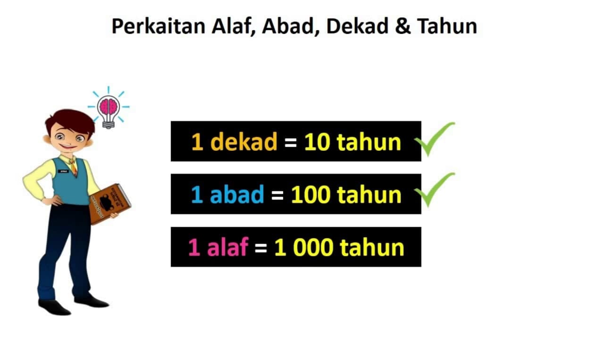
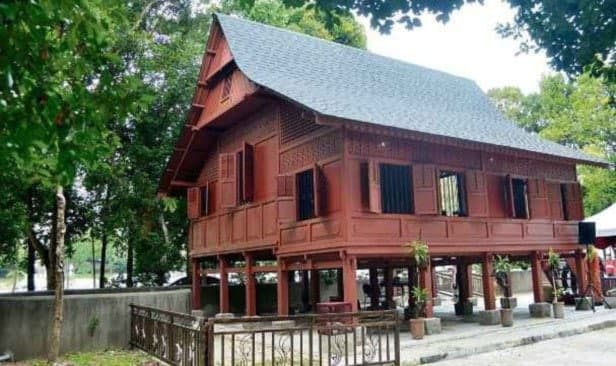

[Subtopik 1] Masa dan Waktu:
Perkaitan Alaf, Abad, Dekad & Tahun

Satu Dekad = Sepuluh Tahun
Satu Abad = Seratus Tahun
Satu Alaf = Seribu Tahun
Jom lihat contoh-contoh ini.
1.Usia seorang kanak-kanak yang berusia "10 Tahun".
Maka usia kanak-kanak tersebut juga berusia bersamaan "1 Dekad".
2.Usia sebuah masjid kuno yang telah dijumpai berusia "1000 Tahun".
Maka usia masjid tersebut juga dikenali sebagai "1 Alaf".
3.Usia sebuah rumah yang telah berusia "100 Tahun".
Ia juga dikenali sebagai rumah yang berusia "1 Abad".
